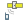

20.1. GPS Plugin
20.1.1. What is GPS?
GPS, the Global Positioning System, is a satellite-based system that allows anyone with a GPS receiver to find their exact position anywhere in the world. GPS is used as an aid in navigation, for example in airplanes, in boats and by hikers. The GPS receiver uses the signals from the satellites to calculate its latitude, longitude and (sometimes) elevation. Most receivers also have the capability to store locations (known as waypoints), sequences of locations that make up a planned route and a tracklog or track of the receiver’s movement over time. Waypoints, routes and tracks are the three basic feature types in GPS data. QGIS displays waypoints in point layers, while routes and tracks are displayed in linestring layers.
Note
QGIS supports also GNSS receivers. But we keep using the term GPS in this documentation.
20.1.2. Loading GPS data from a file
There are dozens of different file formats for storing GPS data. The format that QGIS uses is called GPX (GPS eXchange format), which is a standard interchange format that can contain any number of waypoints, routes and tracks in the same file.
To load a GPX file, you first need to load the plugin.
 opens the Plugin Manager Dialog.
Activate the
opens the Plugin Manager Dialog.
Activate the  GPS Tools checkbox. When this plugin
is loaded, a button with a small handheld GPS device will show up in the
toolbar and in :
GPS Tools checkbox. When this plugin
is loaded, a button with a small handheld GPS device will show up in the
toolbar and in :
 GPS Tools
{kind=link}
{kind=link}
For working with GPS data, we provide an example GPX file available in the QGIS
sample dataset: qgis_sample_data/gps/national_monuments.gpx. See section
Downloading sample data for more information about the sample data.
Select or click the GPS Tools icon in the toolbar and open the Load GPX file tab (see Fig. 20.1).
Browse to the folder
qgis_sample_data/gps/, select the GPX filenational_monuments.gpxand click Open.
Fig. 20.1 The GPS Tools dialog window
Use the Browse… button to select the GPX file, then use the checkboxes
to select the feature types you want to load from that GPX file.
Each feature type will be loaded in a separate layer when you click
OK. The file national_monuments.gpx only includes waypoints.
Note
GPS units allow you to store data in different coordinate systems. When downloading a GPX file (from your GPS unit or a web site) and then loading it in QGIS, be sure that the data stored in the GPX file uses WGS 84 (latitude/longitude). QGIS expects this, and it is the official GPX specification. See https://www.topografix.com/GPX/1/1/.
20.1.3. GPSBabel
Since QGIS uses GPX files, you need a way to convert other GPS file formats to GPX. This can be done for many formats using the free program GPSBabel, which is available at https://www.gpsbabel.org. This program can also transfer GPS data between your computer and a GPS device. QGIS uses GPSBabel to do these things, so it is recommended that you install it. However, if you just want to load GPS data from GPX files you will not need it. Version 1.2.3 of GPSBabel is known to work with QGIS, but you should be able to use later versions without any problems.
20.1.4. Importing GPS data
To import GPS data from a file that is not a GPX file, you use the tool Import other file in the GPS Tools dialog. Here, you select the file that you want to import (and the file type), which feature type you want to import from it, where you want to store the converted GPX file and what the name of the new layer should be. Note that not all GPS data formats will support all three feature types, so for many formats you will only be able to choose between one or two types.
20.1.5. Downloading GPS data from a device
QGIS can use GPSBabel to download data from a GPS device directly as new vector layers. For this we use the Download from GPS tab of the GPS Tools dialog (see Fig. 20.2). Here, we select the type of GPS device, the port that it is connected to (or USB if your GPS supports this), the feature type that you want to download, the GPX file where the data should be stored, and the name of the new layer.
Fig. 20.2 The download tool
The device type you select in the GPS device menu determines how GPSBabel tries to communicate with your GPS device. If none of the available types work with your GPS device, you can create a new type (see section Defining new device types).
The port may be a file name or some other name that your operating system uses as a reference to the physical port in your computer that the GPS device is connected to. It may also be simply USB, for USB-enabled GPS units.
 On Linux, this is something like
On Linux, this is something like /dev/ttyS0or/dev/ttyS1. On Windows, it is
On Windows, it is COM1orCOM2.
When you click OK, the data will be downloaded from the device and appear as a layer in QGIS.
20.1.6. Uploading GPS data to a device
You can also upload data directly from a vector layer in QGIS to a GPS device using the Upload to GPS tab of the GPS Tools dialog. To do this, you simply select the layer that you want to upload (which must be a GPX layer), your GPS device type, and the port (or USB) that it is connected to. Just as with the download tool, you can specify new device types if your device isn’t in the list.
This tool is very useful in combination with the vector-editing capabilities of QGIS. It allows you to load a map, create waypoints and routes, and then upload them and use them on your GPS device.
20.1.7. Defining new device types
There are lots of different types of GPS devices. The QGIS developers can’t test all of them, so if you have one that does not work with any of the device types listed in the Download from GPS and Upload to GPS tools, you can define your own device type for it. You do this by using the GPS device editor, which you start by clicking the Edit Devices button in the download or the upload tab.
To define a new device, you simply click the New Device button,
enter a name, enter download and upload commands for your device, and
click the Update Device button. The name will be listed in the
device menus in the upload and download windows – it can be any string. The
download command is the command that is used to download data from the device
to a GPX file. This will probably be a GPSBabel command, but you can use any
other command line program that can create a GPX file. QGIS will replace the
keywords %type, %in, and %out when it runs the command.
%type will be replaced by -w if you are downloading waypoints,
-r if you are downloading routes and -t if you are downloading tracks.
These are command-line options that tell GPSBabel which feature type to download.
%in will be replaced by the port name that you choose in the download window
and %out will be replaced by the name you choose for the GPX file that the
downloaded data should be stored in. So, if you create a device type with the
download command gpsbabel %type -i garmin -o gpx %in %out (this is actually
the download command for the predefined device type ‘Garmin serial’) and then
use it to download waypoints from port /dev/ttyS0 to the file output.gpx,
QGIS will replace the keywords and run the command
gpsbabel -w -i garmin -o gpx /dev/ttyS0 output.gpx.
The upload command is the command that is used to upload data to the device.
The same keywords are used, but %in is now replaced by the name of the GPX
file for the layer that is being uploaded, and %out is replaced by the port
name.
You can learn more about GPSBabel and its available command line options at https://www.gpsbabel.org.
Once you have created a new device type, it will appear in the device lists for the download and upload tools.
20.1.8. Download of points/tracks from GPS units
As described in previous sections QGIS uses GPSBabel to download points/tracks directly in the project. QGIS comes out of the box with a pre-defined profile to download from Garmin devices. Unfortunately there is a bug #6318 that does not allow create other profiles, so downloading directly in QGIS using the GPS Tools is at the moment limited to Garmin USB units.
20.1.8.1. Garmin GPSMAP 60cs
MS Windows
Install the Garmin USB drivers from https://www8.garmin.com/support/download_details.jsp?id=591
Connect the unit. Open GPS Tools and use type=garmin serial and port=usb:
Fill the fields Layer name and Output file. Sometimes
it seems to have problems saving in a certain folder, using something like
c:\temp usually works.
Ubuntu/Mint GNU/Linux
It is first needed an issue about the permissions of the device, as described
at https://wiki.openstreetmap.org/wiki/USB_Garmin_on_GNU/Linux. You can try to
create a file /etc/udev/rules.d/51-garmin.rules containing this rule
ATTRS{idVendor}=="091e", ATTRS{idProduct}=="0003", MODE="666"
After that is necessary to be sure that the garmin_gps kernel module is not
loaded
rmmod garmin_gps
and then you can use the GPS Tools. Unfortunately there seems to be a bug #7182 and usually QGIS freezes several times before the operation work fine.
20.1.8.2. BTGP-38KM datalogger (only Bluetooth)
MS Windows
The already referred bug does not allow to download the data from within QGIS, so it is needed to use GPSBabel from the command line or using its interface. The working command is
gpsbabel -t -i skytraq,baud=9600,initbaud=9600 -f COM9 -o gpx -F C:/GPX/aaa.gpx
Ubuntu/Mint GNU/Linux
Use same command (or settings if you use GPSBabel GUI) as in Windows. On Linux it maybe somehow common to get a message like
skytraq: Too many read errors on serial port
it is just a matter to turn off and on the datalogger and try again.
20.1.8.3. BlueMax GPS-4044 datalogger (both BT and USB)
MS Windows
Note
It needs to install its drivers before using it on Windows 7. See in the manufacturer site for the proper download.
Downloading with GPSBabel, both with USB and BT returns always an error like
gpsbabel -t -i mtk -f COM12 -o gpx -F C:/temp/test.gpx
mtk_logger: Can't create temporary file data.bin
Error running gpsbabel: Process exited unsuccessfully with code 1
Ubuntu/Mint GNU/Linux
With USB
After having connected the cable use the dmesg command to understand what
port is being used, for example /dev/ttyACM3. Then as usual use GPSBabel
from the CLI or GUI
gpsbabel -t -i mtk -f /dev/ttyACM3 -o gpx -F /home/user/bluemax.gpx
With Bluetooth
Use Blueman Device Manager to pair the device and make it available through a system port, then run GPSBabel
gpsbabel -t -i mtk -f /dev/rfcomm0 -o gpx -F /home/user/bluemax_bt.gpx